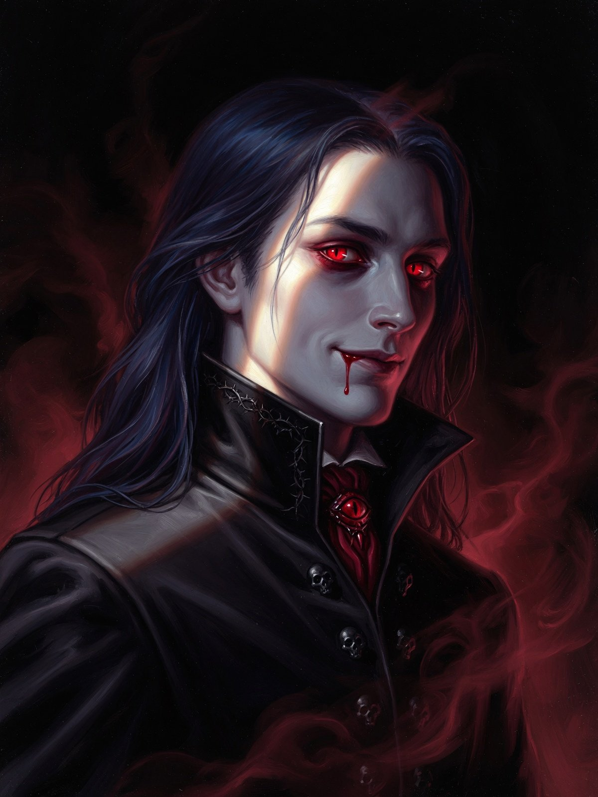
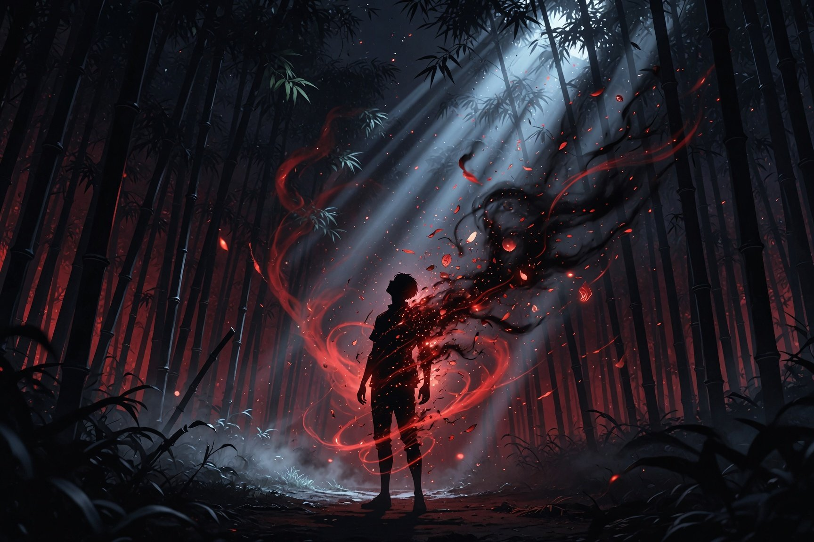

Кто такие демоны
Плотоядный, вампирический вид, основной пищей которого являются люди.

Наш Господин
Прародитель демонов
Демоны под страхом мучительной смерти не способны произнести имя и фамилию нашего Господина, а также любую информацию, способную привести к Прародителю всех демонов.
Дитя ночи
Солнечный свет смертельно опасен для них и сожжёт их дотла, поэтому вся их активность исключительно ночная.
Регенерация
Демоны невосприимчивы к обычному оружию и с лёгкостью восстанавливаются после любой раны, даже заново отращивая голову.
Аномальная сила
Демоны обладают аномально мощными физическими характеристиками и способностью к регенерации.
Воля Прародителя
Ни один демон не имеет права ослушаться приказа Господина.
Основные определения
Семь понятий, на которых держится устройство фракции. Нажми, чтобы раскрыть.
01 🔥 Техника демонической кровиУникальные боевые техники демонов +
Техника демонической крови - это уникальные боевые техники, что используют демоны съевшие достаточное количество людей.
02 📜 Этикет демоновСвод правил поведения демонов внутри фракции +
Этикет демонов - это свод правил, регламентирующее поведение демонов внутри фракции.
- При виде/обращении/выслушивание демона двенадцати лун или прародителя демонов вы обязаны склонить голову и сесть на колено, чтобы в такой позе выслушать приказ или поприветствовать, до тех пор пока вам не разрешат встать.
- Общение со старшими по рангу должно быть сдержанным и уважительным.
- Запрещено общение с лунами или прародителем демонов по свойски/товарищески.
Исключение: Активный бой.
03 🛡 Обязанности демоновЗадачи, ответственности и действия демонов +
Обязанности демонов - это набор задач, ответственностей и действий, которые демоны должны выполнить или осуществить.
Каждый демон обязан:
- Слушать и выполнять приказы старших по рангу.
- Нести ответственность за свои поступки и нарушения.
04 🎯 Цели существования демоновДолг демонов перед прародителем +
Цели существования демонов - это в своей сути долг демонов перед прародителем, который они обязаны выполнить.
К этим целям относятся следующее:
- Поиск голубой паучий лилии.
- Истребление членов семейства Убуяшики.
05 💀 Проклятье демонической кровиСпособность Прародителя контролировать демонов +
Проклятье демонической крови - это способность прародителя демонов, позволяющая контролировать ему других демонов.
- Демоны под страхом мучительной смерти не способны произнести имя и фамилию нашего Господина, а также любую информацию, способную привести к Прародителю всех демонов и способную нарушить его планы.
- Ни один демон не имеет права ослушаться приказа Господина.
06 ⚖ Демонический законПравила жизни фракции +
Демонический закон - свод правил и норм, регламентирующий различные аспекты жизни во фракции. Исполнение данных законов обязательно для каждого демона, а их нарушение наказуемо!
07 🏅 ШрамыНаграды за достижения +
Шрамы - это достижения за которые вы можете получить повышение, денежное вознаграждение.
Двенадцать лун
Группа сильнейших демонов, получивших демоническую кровь, увеличивающую демоническую силу.
Демоны двенадцати лун - это группа сильнейших демонов под командованием Мудзана Кибуцуджи, получивших от последнего небольшое количество демонической крови, увеличивающей демоническую силу. У низших - только число в одном глазу, у высших же на втором имеется надпись «высшая». Луны пронумерованы от самой сильной (1 Высшая) к самой слабой (6 Низшая).
Высшие луны
Надпись «высшая» выгравирована во втором глазу
Первая высшая — сильнейшая из двенадцати. Подчинение между лунами происходит согласно их каноничным характерам.
Низшие луны
Число выгравировано в одном глазу
Шестая низшая — слабейшая из двенадцати.

Обращение в демона
Перевоплощение человека в демона сопровождается ужасной болью, после которой прошлый образ меняется.
Перевоплощение
Для того, чтобы обычный человек смог обратиться в демона ему необходимо принять большое кол-во демонической крови, при этом не умерев.
Некоторые демоны получают незначительные изменения:
✦ Метки новой плоти
Испытательный срок демонов
После того, как игрок обращается в демона на него накладывается испытательный срок, что не позволяет вступать ему в отряды и повышать ранг.
- Нельзя вступать в отряды
- Нельзя повышать ранг
Путь снятия
Чтобы снять испытательный срок, демону необходимо пройти испытание возвышение крови, информацию про которую он может найти в основной информации сайта.
Иерархия фракции
Устройство общей иерархии внутри фракции демонов — каждая ступень абсолютна для той, что ниже.
Прародитель демонов
Абсолютная власть
Высшие луны
Полное командование нижестоящими
Низшие луны
Вторичное командование
Владельцы отрядов
5 RIM
VIC
3-4 RIM
Инструктор
1-2 RIM
D.CMD и CMD отрядов
Первые двенадцать рангов
Демоны первых 12-ти рангов могут осуществлять мелкое руководство нижестоящими демонами. Пример: Принеси - подай, не стой на пути, и т.п. Все демоны стоящие выше первых двенадцати рангов могут организовывать сборы нижестоящих демонов на мероприятия.
Привилегии должностей фракции
Разрешено и запрещено — для каждой должности. Выбери роль слева.
✓ Дозволено
- ✓Осуществлять полное командование над фракцией демонов.
✕ Запрещено
- ✕Лениться и вредить фракции.
✓ Дозволено
- ✓Осуществлять полное командование над нижестоящими демонами.
- ✓Организовывать различные сборы на мероприятия ( Тренировки, вылазки и т.п).
- ✓Пресекать нарушения демонических законов.
- ✓Свободное посещение запретных территорий.
- ✓Если луна является смотрящей какого-либо отряда, осуществлять полное командование и руководство над ним.
- ✓Обучать диких демонов и обращать скитальцев
✕ Запрещено
- ✕Неподчинение установленной иерархии.
- ✕Нарушение демонических законов.
- ✕Вредительство фракции.
- ✕Выдача каких-либо прав, рангов, привилегий другим демонов просто так без одобрения прародителя демонов или же по простому - блатить.
- ✕Невыполнение прямых обязанностей.
✓ Дозволено
- ✓Осуществлять полное командование над нижестоящими демонами
- ✓Организовывать сборы нижестоящих демонов на различные мероприятия (Тренировка, вылазки и т.п)
- ✓Пресекать нарушение демонических законов.
- ✓Свободное посещение запретных территорий.
- ✓Если низшая луна является смотрящей какого-либо отряда, осуществлять вторичное командование над отрядом.
- ✓Обучать диких демонов и обращать скитальцев
✕ Запрещено
- ✕Неподчинение установленной иерархии.
- ✕Нарушение демонических законов.
- ✕Вредительство фракции.
- ✕Выдача каких-либо прав, рангов, привилегий другим демонов просто так без одобрения прародителя демонов или же по простому - блатить.
- ✕Невыполнение прямых обязанностей.
✓ Дозволено
- ✓Руководить нижестоящими демонами
- ✓Организовывать сборы на мероприятия
- ✓Запрашивать выговор
- ✓Полное командование своим отрядом
- ✓Обучать диких демонов и обращать скитальцев
✕ Запрещено
- ✕Неподчинение установленной иерархии.
- ✕Нарушение демонических законов.
- ✕Вредительство фракции.
- ✕Выдача каких-либо прав, рангов, привилегий другим демонов просто так без одобрения прародителя демонов или же по простому - блатить.
- ✕Невыполнение прямых обязанностей.
- ✕Пропуск сборов низших лун+
✓ Дозволено
- ✓Руководить нижестоящими демонами
- ✓Организовывать сборы на мероприятия
- ✓Запрашивать выговор
- ✓Пресекать нарушения
- ✓Обучать диких демонов и обращать скитальцев
✕ Запрещено
- ✕Неподчинение установленной иерархии.
- ✕Нарушение демонических законов.
- ✕Вредительство фракции.
- ✕Выдача каких-либо прав, рангов, привилегий другим демонов просто так без одобрения прародителя демонов или же по простому - блатить.
- ✕Невыполнение прямых обязанностей.
✓ Дозволено
- ✓Руководить нижестоящими демонами
- ✓Запрашивать выговоры
- ✓Пресекать нарушения
- ✓Обучать диких демонов и обращать скитальцев
✕ Запрещено
- ✕Неподчинение установленной иерархии.
- ✕Нарушение демонических законов.
- ✕Вредительство фракции.
- ✕Выдача каких-либо прав, рангов, привилегий другим демонов просто так без одобрения прародителя демонов или же по простому - блатить.
- ✕Невыполнение прямых обязанностей.
Устройство иерархии внутри отрядов
Высшая луна
Полная власть над отрядом.
Низшая луна
Вторичное командование отрядом. Любые изменения отряда должны согласованы с высшей луной.
КМД
Проведение тренировок для состава отряда, проверка шрамов, слежка за дисциплиной.
Зам. КМД
Помощь КМД отряда в выполнении своих обязанностей.
Осуществлять полное командование
Возможность полностью координировать и руководить нижестоящими демонами, а именно проводить тренировки, вылазки, выдавать задания разной степени сложности и т.п. В случае полного руководства отрядом или фракции - возможность вводить различные изменения, работа с составом и полное командование членами отряда.
Руководить нижестоящими демонами
Возможность выдачи мелких поручений, что не будут напрямую подвергать сильной опасности исполнителю.